After his apprenticeship he studied in Paris, where he learned 6-7 languages, which resulted in him coming to the realisation that the best way to teach people was by reading books, but mass manufacturing of books wasn’t as easy as it is today.
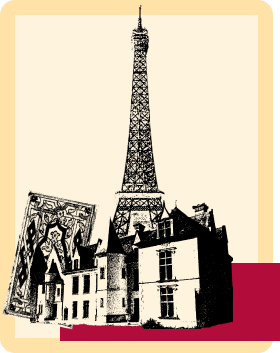 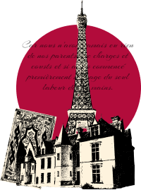After Plantin bought up everything he needed, he realised that Paris wasn’t the correct city to reside in if he intended to reach people internationally. His solution? Moving to Antwerp, Belgium in 1548.
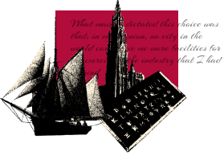Antwerp in the 16th century was a trading hub, as it is situated on a river that was suitable for ships to sail through. This move did pay off for Plantin but also caused him quite a few hardships
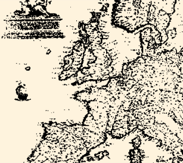Because of his impairment, he could not continue being a bookbinder, so Plantin focused mostly on printing and selling his works.
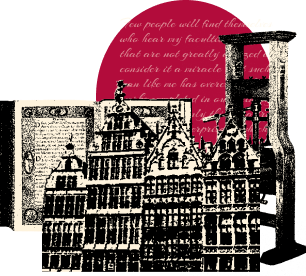One of his first opportunities to prove his abilities was when the guild “House of Love”, which he was a member of, wanted to spread their critical views of the Catholic church. Plantin took up the job.
Being critical of the Catholic church in the 16th century wasn’t anything new, but was punishable by death, since most European countries were ruled by Catholic monarchs.
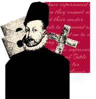The situation in Antwerp was no different as it was under the rule of Philip the II of Spain - a Catholic. Not so surprisingly most of “House of Love” were accused of heresy in 1562.
Some were executed, while others managed to run away. Plantin was one the lucky ones as he was in Paris at the time of the raid.
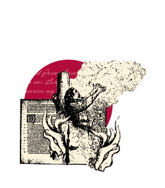 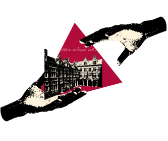In September 1563, he returned to Antwerp, where all his furniture had, in the meantime, been sold to the public.
But presumably the creditors were friends of Plantin, who managed to ensure that the government did not impound his property. They subsequently became his partners.
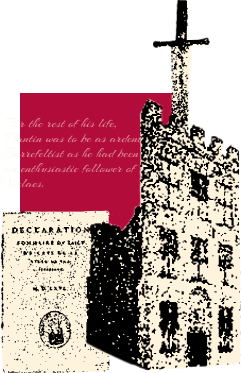Everything seemed to go well for Plantin... that is until 1567, when all of his collaborators, who were convicted Calvinists, fled to the Netherlands.
But the real danger to Plantin lay in Vianen, near Utrecht. In this Calvinist stronghold, Plantin secretly helped to establish an anti-Spanish printing works. This act of high treason could have cost him his head.
He developed a plan that he suspected would be of interest to the ultra-Catholic King Philip II: a scholarly edition of the Biblical texts that would be the largest polyglot Bible of the 16th century.
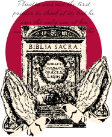This worked a well, so well in fact, that he received the title of King Philip II’s main printer. Ironically, 7 years later Plantin would receive the honour of being the printer for Antwerps city council, which was Calvinist at the time.
Unfortunately, the good times didn’t last for very long, in 1576 Antwerp experienced the Spanish Fury, which took the lives of 17000 men, women and children.
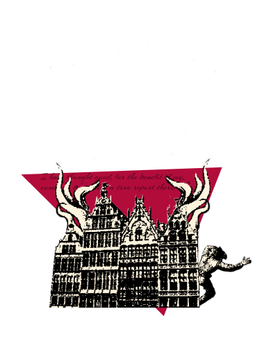Plantin was caught between the different parties: to the outside world, he remained a Catholic, yet he also printed anti-Spanish pamphlets and works.
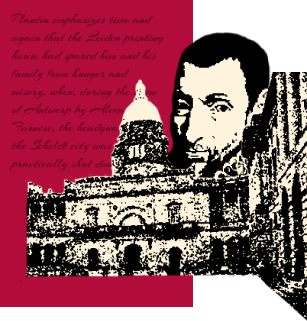The Spanish attempted to take over Antwerp, so Plantin tried to run to Leiden, where he worked for Leiden university. But he didn’t stay for too long and returned to Antwerp in 1586.
Unbeknownst to Plantin, both his business and Antwerp would never be the same during his lifetime. Christophe Plantin died on July 1st 1589, his printing house of inherited by his son-in-law Jan I Moretus.
After Plantins death, the printing house was managed by the Moretus family starting with Jan I Moretus and ending with Edward Moretus, who sold the printing house to the city of Antwerp.
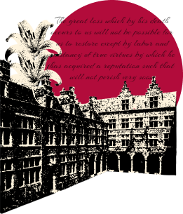The building has now been converted into a museum.
Jan Moretus - heir of Christophe Plantin